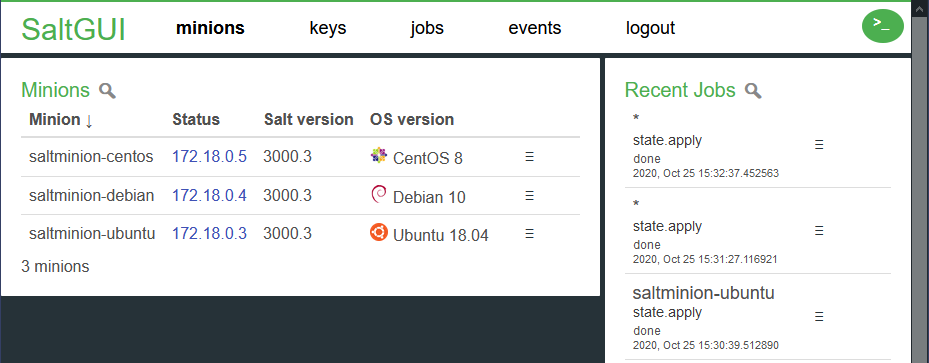
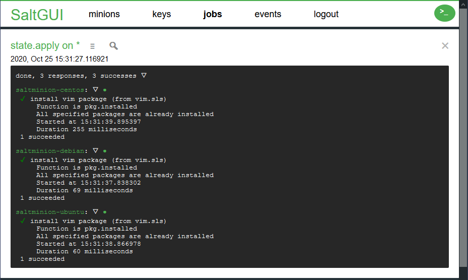

SaltGUI
A new open source web interface for managing a SaltStack server. Built using vanilla ES6 and implemented as a wrapper around the rest_cherrypy server.
The version tagged release is the latest released version. The version master should be fine, but it may contain changes that are not yet in these release-notes.
Screenshots


Features
- Simple setup without the need to add a database
- Login via PAM or any other supported authentication by Salt
- View minions and easily copy IPs
- Run state.highstate for a particular minion or all
- View the seven most recent jobs run on Salt
- Manually run any Salt function and see the output
- View highstate for all minions with details
- View issues for all minions with trivial solutions
- View the values for grains for a particular minion
- View the schedules for a particular minion
- View the values for pillars for a particular minion
- View the beacons for a particular minion
- View the live events on the salt-event bus
- View internal documentation for any salt command
- View external documentation for any salt command
- Define your own custom documentation for commands
- Match list of minions against reference list
- Match status of minions against reference list
Authentication
SaltGUI supports the following authentication methods supported by salt:
- pam
- file
- ldap
- mysql
- yubico
Since pam by itself is already very powerfull, that one is mentionned as standard.
By default, it provides access to the Linux password file,
When other authentication methods need to be used their names can be added to file saltgui/static/salt-auth.txt.
There is one name per line in that file. Choose the authentication methods that are activated
in the salt-master configuration wisely, as the integrity of the salt-master and all salt-minions depends on it.
See the EAUTH documentation and the Salt auth source code for more information.
Quick start using PAM as authentication method
- Install
salt-api- this is available in the Salt PPA package which should already been installed if you're using Salt - Open the master config /etc/salt/master
- Find
external_authand configure as following (see the note below!):
external_auth:
pam:
saltuser1:
- .*
- '@runner'
- '@wheel'
- '@jobs'
- See
docs/PERMISSIONS.mdfor more restricted security configurations. - The username 'saltuser1' is only an example. Generic accounts are not recommended, use personal accounts instead. Or use a user-group, see https://docs.saltproject.io/en/latest/topics/eauth/index.html for details.
- Multiple entries like
saltuser1can be added when you have multiple users. saltuser1is a unix (PAM) user, make sure it exists or create a new one.- At the bottom of this file, also setup the rest_cherrypi server to access SaltGUI from "http://localhost:3333" (or on any of the hostnames that the server has):
rest_cherrypy:
port: 3333
host: 0.0.0.0
disable_ssl: true
app: /srv/saltgui/index.html
static: /srv/saltgui/static
static_path: /static
- Note that the cherrypi server is part of the salt-api package and has no separate installation. It is configured using the master configuration file. When configured using the above configurations, both the api calls and the html/js files are served by the cherrypy server. Therefore no additional web application server is needed.
- Note that from the SaltGUI GIT repository, only the directory
saltguiforms the actual SaltGUI web application. - Replace each of the
/srv/saltguiin the above config with the actualsaltguidirectory from the GIT repository. Alternatively, you can create a soft-link /src/saltgui that points to the actual saltgui directory. - Restart everything with
pkill salt-master && pkill salt-api && salt-master -d && salt-api -d - You should be good to go. If you have any problems, open a GitHub issue. As always, SSL is recommended wherever possible but setup is beyond the scope of this guide.
Note: With this configuration, the user has access to all salt modules available, maybe this is not what you want
Please read the Permissions page for more information.
Command Box
SaltGUI supports entry of commands using the "command-box". Click on >_ in the top right corner to open it.
Enter salt-run commands with the prefix runners.. e.g. runners.jobs.last_run. The target field can remain empty in that case as it is not used.
Enter salt-call commands with the prefix wheel.. e.g. wheel.key.finger. The target field will be added as named parameter target. But note that that parameter may not actually be used depending on the command.
Enter regular commands without special prefix. e.g. test.ping. The command is sent to the minions specified in the target field.
The text ##connected in the target field will be immediatelly replaced by the list of connected
minions, or with * when all minions are connected, or with an expression when that is shorter.
Commands can be run normally, in which case the command runs to completion and shows the results. Alternatively, it can be started asynchronously, in which case only a bit of progress information is shown. When variable state_events is set to true, then the progress is shown per state when applicable. Batch commands are not supported at this time.
Output
SaltGUI shows the data that is returned by the Salt API.
Some variation can be achieved by modifying salt master configuration file /etc/salt/master.
e.g. (the default)
saltgui_output_formats: doc,saltguihighstate,json
doc allows reformatting of documentation output into more readable format. Also implies that only the result from one minion is used.
saltguihighstate allows reformatting of highstate data in a sorted and more readable format.
json, yaml and nested specify how all other output should be formatted. Only the first available of these formats is used.
Time representation
The time formats used by Salt are very detailed and by default have 6 decimal digits to specify as accurate as nano-seconds. For most uses that is not needed. The fraction can be truncated to less digits by modifying salt master configuration file /etc/salt/master.
e.g.
saltgui_datetime_fraction_digits: 3
The value must be a number from 0 to 6. Note that the effect is achieved by string truncation only. This is equivalent to always rounding downwards.
How the date and times that are shown can also be changed. e.g.:
saltgui_datetime_representation: utc
The value must be utc, local, utc-localtime or local-utctime.
With utc, only the UTC date and time are shown.
With local, only the local date and time are shown. This includes an indication of the timezone.
With utc-localtime, the UTC date and time are shown. Additionally, the local time (not the local date) is shown.
With local-utctime, the local date and time are shown. Additionally, the UTC time (not the UTC date) is shown.
In all cases, a tooltip is added to a date+time field that shows the full representation of the date and time in both the local timezone and in UTC.
Templates
SaltGUI supports command templates for easier command entry into the command-box.
The menu item for that becomes visible there when you define one or more templates
in salt master configuration file /etc/salt/master.
The field targettype supports the values glob, list, compound and nodegroup.
Entries will be sorted in the GUI based on their key.
You can leave out any detail field.
e.g.:
saltgui_templates:
template1:
description: First template
target: "*"
command: test.fib num=10
template2:
description: Second template
targettype: glob
target: dev*
command: test.version
When there are a lot of templates, they can be organized into categories. e.g.:
saltgui_templates:
template1:
description: First template
target: "*"
command: test.fib num=10
category: cat1
template2:
description: Second template
targettype: glob
target: dev*
command: test.version
categories:
- cat1
- cat2
When at least one template is assigned to a category, then you can select a template category before selecting the actual category. Otherwise that choice remains hidden. Templates can be in multiple categories when a list of categories is assigned.
Jobs
SaltGUI shows a maximum of 7 jobs in on the right-hand-side of the screen. SaltGUI shows a maximum of 50 jobs on the dedicated jobs page. Commands that are used internally in SaltGUI are initially hidden.
On the Jobs page, more jobs can be made visible.
Select 'Show eligible jobs to show all jobs that are not classified as internally-used jobs. Select 'Show all jobs to show all jobs that are known to salt.
Additional commands to hide can be configured
in salt master configuration file /etc/salt/master.
e.g.:
saltgui_hide_jobs:
- test.ping
Commands that are normally hidden can be made visible using configuration
in salt master configuration file /etc/salt/master.
e.g.:
saltgui_show_jobs:
- grains.items
Grains
Selected grains can be previewed on the Grains page.
The names of these grains can be configured
in salt master configuration file /etc/salt/master.
e.g.:
saltgui_preview_grains:
- "osrelease_info"
The names can be specified as simple names like the example above.
Alternatively, the grains.get notation can be used to get more detailed information. The separator is always :. e.g. locale_info:timezone.
Alternatively, the jsonpath notation can be used to allow even more freedom. Jsonpath is used when the text starts with a $. e.g. $.ip4_interfaces.eth0[0].
Pillars
Pillars potentially contain security senstitive information.
Therefore their values are initially hidden.
Values become visible by clicking on them.
This behavior can be changed by adjusting the values of the configuration
in salt master configuration file /etc/salt/master.
The values for the pillar whose name match one of these regular expressions
are initially shown.
e.g.:
saltgui_public_pillars:
- pub_.*
Custom command documentation
A custom HTML help text can be shown from the "Manual Run" overlay.
To use it,
- specify
saltgui_custom_command_helpin the salt master config. Example:
saltgui_custom_command_help: |
<h2>Job Commands</h2>
runners.jobs.active
=> Show active jobs
runners.jobs.list_job «JID»
=> Show job with given job id (JID)
- Hover the documentation icon (
📖︎) near the command input field and selectShow custom help
Message-of-the-day
A message-of-the-day (motd) can be added to the login screen. It can be used for any information, e.g.:
- legal statement
- system identification
- useful links to other systems
- informing users about system availability
- etc.
The text is stored in file saltgui/static/salt-motd.txt or saltgui/static/salt-motd.html. The first must be pre-formatted text only. The second one can contain full HTML text. Both are shown when they are present. Note that the message should not contain sensitive data, as its content is shown before logging in.
Alternatively, or additionally, the text can be retrieved from the master file entries saltgui_motd_txt and saltgui_motd_html. These entries can contain sensitive information because its content can only be retrieved after login. But it is still recommended to not let the text contain any sensitive data.
Reduced menus
When apis are disabled using the native external_auth mechanism,
SaltGUI may show menu-items that have become unuseable.
In that case, it may be useful to reduce the menu-bar to less items.
Variable saltgui_pages is read from salt master configuration file /etc/salt/master.
It contains the list of accessible pages per user.
The first page in the list also becomes the landing page.
Users that are not listed still have the full menu.
e.g.:
saltgui_pages:
user1:
- keys
- grains
Note that this is NOT a security mechanism to reduce what a user can do.
All pages are still accessible using their original deep-link.
And also any command can still be issued using the command-box.
For real security measures, use parameter external_auth.
Preformance
SaltGUI does not have artificial restrictions.
But displaying all data may be slow when there is a lot of data.
Most notorious is the display of a highstate with hundreds of minions, each with douzens of states.
SaltGUI can be forced to use a slightly simpler output by setting a parameter in salt master configuration file /etc/salt/master.
e.g.:
saltgui_tooltip_mode: simple
This parameter forces SaltGUI to use a very simple tooltip representation. This is then the built-in version from the brower. Typical effect is that it is shown slightly delayed and that is looks a bit primitive. The only other allowed value is "none", with the effect that no tooltips are shown at all.
Settings and statistics
By using ctrl-click on the SaltGUI logo in the top-left corner, an otherwise hidden page is made visible. The page shows the relevant settings from 3 categories on the left side and the api statistics on the right side.
First category contains the "session" details, which are the result of the login. Second category contains the variables from the master file that are also relevant for SaltGUI. The final category contains the variables that are specific to SaltGUI. Simple variables with a limited range of values can be changed here for the duration of the current session. Permanent changes must be made in the master file.
The statistics panel is updated every 3 seconds.
Numeric fields that are known to contain timestamps are reformatted as readable strings.
Numeric fields that are known to contain durations are reformatted as readable strings.
Statistics for most threads that did not handle any requests yet are replaced by an empty string.
The amount of details shown depends on the parameter collect_stats in the rest_cherrypy block of the master file.
Key administration
In situations like cloud hosting, hosts may be deleted or shutdown frequently.
But Salt remembers the key status from both.
SaltGUI can compare the list of keys against a reference list.
The reference list is maintained as a text file, one minion per line.
First column is the minion name.
Second column is false when the minion is known to be absent due to machine shutdown.
It should be true otherwise.
When the second column is missing, this validation is not performed.
Lines starting with # are comment lines.
The filename is saltgui/static/minions.txt.
Differences with this file are highlighted on the Keys page.
Minions that are unexpectedly down are highlighted on the Minions page.
When the file is absent or empty, no such validation is done.
It is suggested that the file is generated from a central source,
e.g. the Azure, AWS or similar cloud portals; or from a company asset management list.
Separate SaltGUI host
In some specific environments you might not be able to serve SaltGUI directly from salt-api. In that case you might want to configure a web server (for example NGINX) to serve SaltGui and use it as proxy to salt-api so that requests are answered from the same origin from the browser point of view.
Sample NGINX configuration might look like this:
server {
listen 80;
server_name _;
root /data/www;
index index.html;
# handle internal api (proxy)
location /api/ {
proxy_set_header X-Real-IP $remote_addr;
proxy_set_header X-Forwarded-For $proxy_add_x_forwarded_for;
proxy_set_header X-NginX-Proxy true;
proxy_pass http://saltmaster-local:3333/;
proxy_ssl_session_reuse off;
proxy_set_header Host $http_host;
proxy_redirect off;
}
# handle saltgui web page
location / {
try_files $uri /index.html;
}
}
The value of the API_URL in the config.js file must point to path where salt-api is exposed.
The value of the NAV_URL in the config.js file must point to path where the SaltGUI application is exposed.
const config = {
API_URL: '/api',
NAV_URL: '/app'
};
Note that the main page of SaltGUI is then located at /app/. When you want /app to work as well, you should instruct an intermediate proxy server to translate /app into /app/.
Currently you can't use totally independent salt-api without proxy as support for CORS preflight request is not properly support.
Development environment with Docker
To make life a bit easier for testing SaltGUI or setting up a local development environment you can use the provided docker-compose setup in this repository to run a saltmaster with three minions, including SaltGUI:
cd docker
docker-compose up
Then browse to http://localhost:3333/, you can login with salt:salt.
Testing
We provide some functional tests and unit tests. They use the docker setup to run the functional tests. You will also need yarn and node.js to run them. When you have docker, yarn and node.js installed, you can run the tests from the root of the repository like this:
./runtests.sh
To show the browser window + a debugger while running the functional tests you can run:
NIGHTMARE_DEBUG=1 ./runtests.sh
We use the following testing libraries:
- nightmare.js, for functional/browser tests
- mocha, a well documented testing framework for javascript
- chai, the preferred assertion library for testing
You'll need at least:
docker-compose1.12 or abovenodejs8.11 or aboveyarn1.7 or above
Known issues
At least in Chrome 96 and Edge 96, the "pause" icon is shown in its "emoji" form and appears in its coloured form. This also happens for the looking-glass icon in the search field.
Contributing
Open a PR! Try to use no dependencies where possible, as vanilla JS is the aim. Any libraries will need to be heavily considered first. Please see the section above as PRs won't be reviewed if they don't pass the tests.
Contributions to the SaltGUI projects are welcome! This can either be through a pull-request (PR) or by creating an issue with an idea.
When you create an issue with an idea, make sure that:
- it is one idea/question at a time
- a new idea is useful for most users
- the
salt-apicalls to be used are mentionned when possible for new ideas
There are few coding standards:
- obey the rules from stylelint (for CSS)
- obey the rules from eslint (for JS)
- local functionnames start with "_"
When you create a PR, make sure that:
- it is one idea at a time
- it is as simple as possible
- it is useful for most users
- there are no errors from
eslint - there are no errors from
stylelint - there are coverage tests to cover all new non-gui code
- there are functional/gui tests to cover all new gui code
License
The MIT License (MIT) Copyright (c) 2016, 2017, 2018 Oliver Dunk, Martijn Jacobs, Erwin Dondorp
Permission is hereby granted, free of charge, to any person obtaining a copy of this software and associated documentation files (the "Software"), to deal in the Software without restriction, including without limitation the rights to use, copy, modify, merge, publish, distribute, sublicense, and/or sell copies of the Software, and to permit persons to whom the Software is furnished to do so, subject to the following conditions:
The above copyright notice and this permission notice shall be included in all copies or substantial portions of the Software.
THE SOFTWARE IS PROVIDED "AS IS", WITHOUT WARRANTY OF ANY KIND, EXPRESS OR IMPLIED, INCLUDING BUT NOT LIMITED TO THE WARRANTIES OF MERCHANTABILITY, FITNESS FOR A PARTICULAR PURPOSE AND NONINFRINGEMENT. IN NO EVENT SHALL THE AUTHORS OR COPYRIGHT HOLDERS BE LIABLE FOR ANY CLAIM, DAMAGES OR OTHER LIABILITY, WHETHER IN AN ACTION OF CONTRACT, TORT OR OTHERWISE, ARISING FROM, OUT OF OR IN CONNECTION WITH THE SOFTWARE OR THE USE OR OTHER DEALINGS IN THE SOFTWARE.
Credits
This excellent frontend is originally written by Oliver Dunk.
SaltGUI includes these libraries (with possible modifications):
- sorttable: see https://www.kryogenix.org/code/browser/sorttable/
- search-highlight: https://www.the-art-of-web.com/javascript/search-highlight/
- jsonpath: https://www.w3resource.com/JSON/JSONPath-with-JavaScript.php
Changelog
1.28.0 (2022-04-16)
- Added icons for Rocky (thx byoungstrom), OpenWRT (thx vemilyus), and a few more (erwindon)
- Bump eslint and stylelint to latest versions (erwindon)
- Fixed stylelint issues now that stylelint became more strict (erwindon)
- Enhanced date/time representation (thx achimmihca)
- Fixed logout warning (erwindon)
- Added support for template categories (thx xzenor)
- Added support for issues overview (erwindon, thx xzenor)
- Improved help texts (erwindon, thx achimmihca)
- Deeplink now survives login screen (thx achimmihca)
- Added easier targetting connected minions only with '##connected' target
- Use consistent style when warning for something (erwindon)
- Improved reporting on CVE issues (erwindon)
- Added direct navigation to minion details (erwindon)
- Improved hightstate overview (erwindon)
- Fix for viewing a job that was started with a list target (erwindon)
- Fix to prevent spell-checking in the text fields (erwindon)
- Added support for state_output_pct (erwindon)
- Provided simple download facility for job results (thx buffman23)
- Fixed json-stringify for strings like `1777' (erwindon)
- Fixed race-condition on startup (erwindon)
- Do not analyse version of offline minion (erwindon)
- Handle the output of some really old minions (erwindon)
- Fixed aysnc status indicator in command-panel (erwindon)
- Fixed pluralization issue due to text-vs-number mistake (erwindon)
- More code cleanups and various small stuff (erwindon)
- Celebrating 350 stars on GitHub
1.27.0 (2021-11-29)
- Introduced a highstate overview per minion in the jobs menu (erwindon, thx xzenor)
- Improved handling of JS promises (erwindon)
- Several small improvements on gui behaviour (erwindon)
- Fixed real-time job status on Keys page (erwindon)
- Improve pause/play button, added 'none' state (erwindon)
- Added icon for CentOS Stream (erwindon, thx xzenor)
- Automatically provide alternative for unknown icon (erwindon)
- Solution for jobs results without minions list, e.g. when using mysql (erwindon, thx xzenor)
- Bump eslint and stylelint to latest versions (erwindon)
- More code cleanups and various small stuff (erwindon)
1.26.0 (2021-10-31)
- Applied review comments on documentation (thx achimmihca)
- Prevent use of null when a task reported changes as such (thx xzenor)
- Add support for additional salt.auth types (thx hoaivan)
- Added a message-of-the-day (motd) facility, before and/or after login (erwindon)
- Various gui (code) improvements and tweaks (erwindon)
- Fixed highstate tooltip content (erwindon)
- Use uniform buttons, but smaller when in a table (erwindon)
- Hide the commandbox on automatic logout (erwindon)
- Fixed beacon template for cert_info (erwindon)
- Bump stylelint+eslint versions (erwindon)
- Fixed several codebeat reported issues (erwindon)
- Added a few more CVEs to test for (erwindon)
- Fixed several constructions that needed higher ES versions (erwindon)
- Display warning sign for error information in beacon data (erwindon)
- Inform when no, or less, beacon-type info is available (erwindon)
1.25.0 (2021-08-01)
- Fixed generating commands without proper quoting (erwindon, thx xzenor)
- Added extended help for beacon configuration (erwindon)
- Fixed sticky key status (erwindon)
- Updated CVE info to include recent disclosures (erwindon)
- Several small improvements and fixes (erwindon)
- Updated several dependencies reported by dependabot (erwindon)
- Celebrating 300 stars on GitHub
1.24.0 (2021-03-04)
- SaltGUI is now a single page application (erwindon)
- Allow reduced number of pages (erwindon, thx bbinet)
- Show unconnected minions even before api timeout (erwindon)
- Job output refresh without page reload (erwindon)
- Cmd panel close refresh page without reload and smarter (erwindon)
- Updated list of CVEs that we must warn for (erwindon)
1.23.0 (2020-12-28)
- Warn when there are no matching targets (erwindon)
- Added basic support for reactors (erwindon)
- Added support to add all 3 schedule types (erwindon)
- Consider the state_verbose and state_output variables (erwindon)
- Async (highstate) jobs now provide feeback about progress (erwindon)
- Added support for bulk state apply (erwindon)
- Added support for bulk key management (erwindon)
- Prefer JS escape codes over html escape codes (erwindon)
- Centralized special character handling (erwindon)
- Restyled the top-right cmd-button (erwindon, thx dawidmalina)
- Wheel commands can only take named parameters (erwindon)
- Let pages decide on their own visibility (erwindon)
- Better support for touchscreens (erwindon)
- Show cherrypy details on (hidden) screen (ewindon)
- Improved session timeout detection (erwindon)
- Improved (hidden) options screen (erwindon)
- Reduce update-rate of jobs overview, now interruptable (erwindon)
- Cleaned code for dropdown menus (erwindon)
- Small fixes for sonarqube results (erwindon)
- Small fixes for layout and spelling (erwindon)
- Celebrating (almost) 250 stars on GitHub
1.22.0 (2020-11-05)
- Added alert for all known CVEs (erwindon)
- Added external documentation access (erwindon)
- Improved support for multiple message beacons (erwindon)
- Added play/pause buttons for dynamic screens (erwindon)
- Use more util functions for common tasks (erwindon)
- Reorganized code in pages and panels (erwindon)
- Improved support for very old browsers (erwindon)
- ReplaceAll is not universally supported (erwindon, thx Timbus)
- Added support for """strings""" (erwindon, thx jfunnell)
- Modernized JS code (erwindon)
- Fixed whitespace situations with commands (erwindon)
- Additional eslint fixes (erwindon)
- Update of tools (erwindon)
- Small documentation fixes (erwindon)
1.21.0 (2020-08-02)
- Added event-monitoring page (erwindon, thx mchugh19)
- Added search-options (erwindon, thx mchugh19)
- Upgraded eslint to 7.5; applied most rules (erwindon)
- Warn for imminent session timout (erwindon)
- Simplified html object selection (erwindon)
- Unified search handling (erwindon)
- Mark current choice in selection menus (erwindon)
1.20.0 (2020-05-22)
- Cleanup handling of urls; allow alternative prefixes (erwindon, thx ggiesen)
- Now supporting list of minion that are known to be down (erwindon)
- Verify master/minion versions and highlight problems and differences (erwindon)
- Bumped docker images to latest version (erwindon)
- Small consistency updates for Options screen (erwindon)
- Fix Templates screen in case there are no templates (erwindon)
- Explain that some beacons send multiple values, but we view only the latest (erwindon)
- Support beacons that provide an extended tag name (erwindon)
- Fixed menus for rows in Keys screen when key status changes (erwindon)
- Improved unit tests (erwindon)
1.19.1 (2020-03-09)
- Match minions against external reference list (erwindon)
1.19.0 (2020-03-08)
- Allow jsonpath for grain preview (erwindon, thx alexlllll)
- Details on Jobs page now initially shown using timer loop (erwindon)
- Celebrating 200 stars on GitHub
1.18.0 (2019-11-22)
- Added missing openbsd icon (erwindon, thx hbonath)
- Added support for orchestration output (erwindon, thx gnouts)
- Clarified some documentation issues (erwindon)
- Smarter placement of tooltips (erwindon)
- No inner-scrollbar for cmd box (erwindon)
- Hide job details with data from many minions (erwindon)
- Added menu option for state testing (erwindon)
- More code cleanups (erwindon)
1.17.0 (2019-07-14)
- Added code and instructions to set up standalone SaltGUI (dawidmalina)
- Return to login on session timeout (erwindon)
- Improve showing where info is automatically updated (erwindon)
- Added an overview screen for options, ctrl-click logo to show (erwindon)
- Lots of code cleanups (erwindon)
1.16.0 (2019-06-23)
- Added visual task summaries for hightstate output, suggested by elipsion (erwindon)
- Added search facility also on job output screen (erwindon)
- Show JOB-ids as links in job output (erwindon)
- Reduce highstate output by leaving out some more trivial details (erwindon)
- Better background for tooltips on top of dark backgrounds (erwindon)
- Added ability to reduce tooltip complexity/presence, suggested by elipsion (erwindon)
- Fixed handling of
argsandkwargsfor job definitions (erwindon) - Fixed exitcode for regular jobs (erwindon, thx elipsion)
1.15.2 (2019-06-07)
- Fixed problem with job status fields not updating since 1.15.0 (erwindon)
1.15.1 (2019-06-04)
- Fixed problem with job status fields not updating since 1.15.0 (erwindon)
1.15.0 (2019-06-02)
- Choose number of jobs visible on Jobs page (erwindon, thx elipsion)
- Fixed problems with element ids (erwindon, thx lordfolken)
- Show beacon values (erwindon)
- Summary line for all pages (erwindon)
- Do not claim events after session timeout (erwindon)
- Properly handle details refresh of jobs that have now expired (erwindon)
- Add standard texts to table filter textfield (erwindon)
- Do not use getElementById for non-unique elements (erwindon)
- Use standard function for texts that apply 0, 1 or many times (erwindon)
- Use asynchronous updates for Keys page (erwindon)
- Prevent crash on NULL output (erwindon)
- Small layout fixes (erwindon)
1.14.0 (2019-05-14)
- Implemented management of beacons (erwindon)
- Added search function for tables (erwindon)
- Major cleanup of js-promise handling (erwindon)
- Re-organized all menu item creations (erwindon)
- Better validations on url parameters (erwindon)
- JS and CSS code cleanups (erwindon)
- Small layout fixes (erwindon)
- Additional testing (dawidmalina)
1.13.0 (2019-04-27)
- Improved indication for sorted tables (erwindon)
- Display ip-number from likely common network (erwindon, thx jonathanuntalan-rfg)
- Enhanced display of in-progress jobs (erwindon)
- Introduced placeholders when suggesting incomplete commands (erwindon)
- Added term/kill/signal commands to jobs and processes (erwindon)
1.12.0 (2019-04-14)
- Improved tooltips; added tooltips on more places (erwindon)
- Improved job summary: show number of succeeded/failed (erwindon)
- Fixed small issue with display of pillars (erwindon)
- Fixed small issue with display of schedules (erwindon)
- Added job-details column to jobs overview (erwindon)
- Code cleanup: use consistent callback names (erwindon)
- Code cleanup: better use of the page framework (erwindon)
- Fixed dates in changelog (dawidmalina)
- Completed historic overview in changelog (erwindon)
- Fixes for maximum text in columns (erwindon)
- Fixed datetime display; always obey set format (erwindon)
- Fixed missing summary of changes for SaltGuiHighstate (erwindon)
- Added original highstate output format (erwindon)
- Updated salt version to 2019.2.0 for docker images (erwindon)
- All JS code is now in modules (erwindon)
- Some more small fixes (erwindon)
1.11.0 (2019-03-30)
- Migrated from yarn to npm (smarletta)
- Separated unit tests and functional tests (smarletta)
- Standardized filenames (smarletta)
- Converted to JS modules (smarletta)
- Added coverage report for unit tests (smarletta)
- Close job details now returns to previous page (dawidmalina)
- Fixed small layout issues (erwindon)
- Standardized internal api functions (erwindon)
- Removed some unused functions (erwindon)
1.10.1 (2019-02-24)
- Small bugfix for copy of ip-number (erwindon)
1.10.0 (2019-02-12)
- Improved navigation: made rows clickable (erwindon)
- Fixed invisible menu in small width screens (dawidmalina/erwindon)
- Set display of keys to monospace (erwindon)
1.9.0 (2019-02-06)
- Added more control over output format (erwindon)
- Added link to GitHub project on login page (dawidmalina)
- Added separate Jobs page (dawidmalina)
- Fixed some OS-icons (erwindon)
- Support more compact time notation (erwindon)
- Show popup menus as early as possible (erwindon)
- Added separate Job Templates page (dawidmalina)
- Show which jobs are still running (erwindon)
- Added re-run functionality for jobs (erwindon/dawidmalina)
1.8.0 (2019-01-13)
- Improved testing support (erwindon/dawidmalina)
- Allow most tables to be sorted (erwindon/dawidmalina)
- Added support for non-secret pillars (erwindon/dawidmalina)
- Removed sub-sections from keys page, unaccepted now sorts first (erwindon)
- Fixed auto-copy (erwindon)
- Fixed issues with ip-number when multiple available, reported by dawidmalina (erwindon)
- Improved the general design (dawidmalina)
- Added OS images with the OS names, suggested by dawidmalina (erwindon)
- Added sync-grains and sync-pillars commands, suggested by dawidmalina (erwindon)
1.7.0 (2018-12-22)
- Allow some editing on grains info (erwindon)
- Allow some editing on schedules info (erwindon)
- Minimize handling of pillar values (erwindon)
- Fixes some text/html representation problems (erwindon)
1.6.0 (2018-12-15)
- Added page for grain info (erwindon)
- Added page for schedules info (erwindon)
- Added page for pillars info (erwindon)
- Celebrating almost 100 stars on GitHub
1.5.2 (2018-12-10)
- Added list of values for targetfield: minions+nodegroups, suggested by lostsnow (erwindon)
1.5.1 (2018-12-08)
- Fixed named parameter issues reported by marceliq (erwindon)
- Fixed result display for wheel/runner functions (erwindon)
1.5.0 (2018-12-03)
- Added command templates (erwindon)
- Added targettype nodegroups (lostsnow)
1.4.1 (2018-11-07)
- Added selectable targettype (erwindon)
- Improved state output (erwindon)
- Various output improvements (erwindon)
1.4.0 (2018-10-20)
- Improved (high)state output (erwindon)
- Added collapsable output (erwindon)
- Format jobs same as direct command output (erwindon)
- Jobs can now be started asynchronously (erwindon)
1.3.0 (2018-09-28)
- Improved command parser (erwindon)
- Loads of ES6 code improvements and testing including linting (erwindon/maerteijn)
- Documentation view option in the command box (erwindon)
- Show job progress in job list (erwindon)
- Improved job detail (erwindon)
1.2.0 (2018-07-30)
- Addition of menu bar; separation of minion vs keys (erwindon)
- Added mysql as authentication method and retired auto and sharedsecret (erwindon)
- Added some responsive improvements (erwindon)
1.1.1 (2018-07-23)
- Support for several EAUTH authentication methods (erwindon)
1.1.0 (2018-07-16)
- Shows inactive minions as well (erwindon)
- Switch to a more reliable grain indicating the ip-number (erwindon)
- Added a logout button (erwindon)
- Improved minion loading page: first the keys and update them according to their status (erwindon)
- Fixed issue with session timeout (erwindon)
- Added keymanagement functionality (erwindon)
- Created a nice dropdown menu (erwindon)
- Improved ES6 code (erwindon)
- Added a close button to the command popup (erwindon)
1.0.1 (2018-05-16)
- Fixed position of popup when main window has scrolled (erwindon)
- Sort minions by hostname (erwindon)
- Fixed OS description in minion overview (No lsb_distrib_description) (erwindon)
- Now sort the jobs correctly on
StartDatein the overview window (erwindon)
1.0.0 (2018-03-07)
- Original release with some styling fixes and with enabled highstate functionality (maerteijn)
(2017-11-15)
- New maintainer (maerteijn)
(2016-07-20)
- Initial version (oliverdunk)